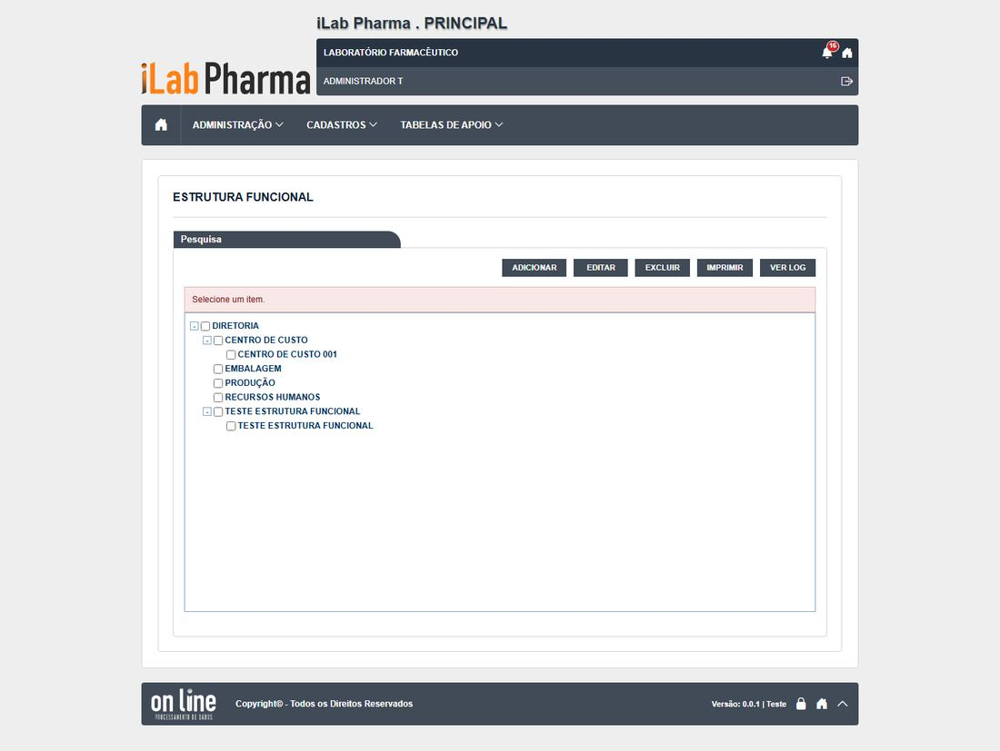
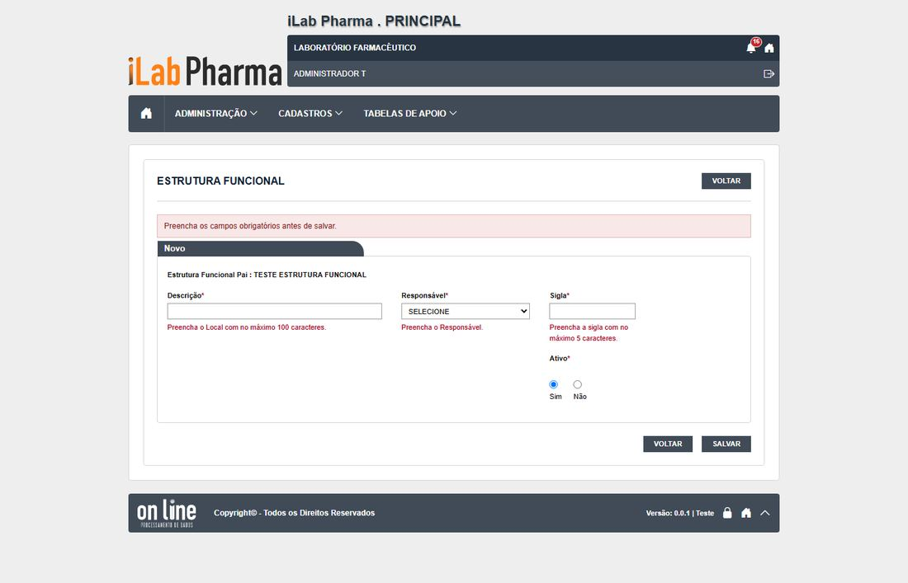
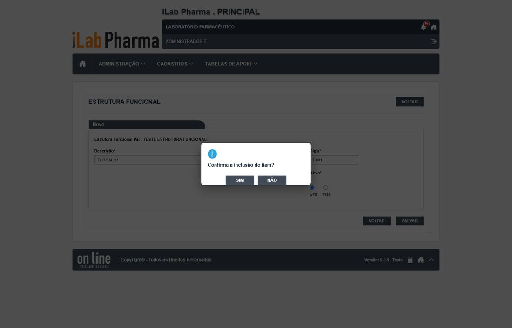
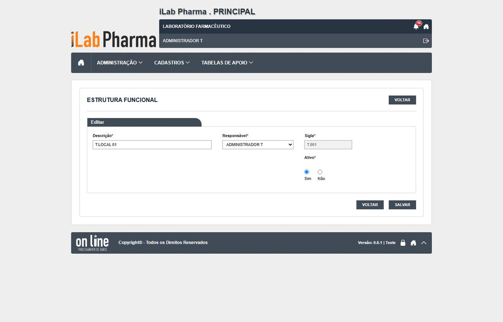
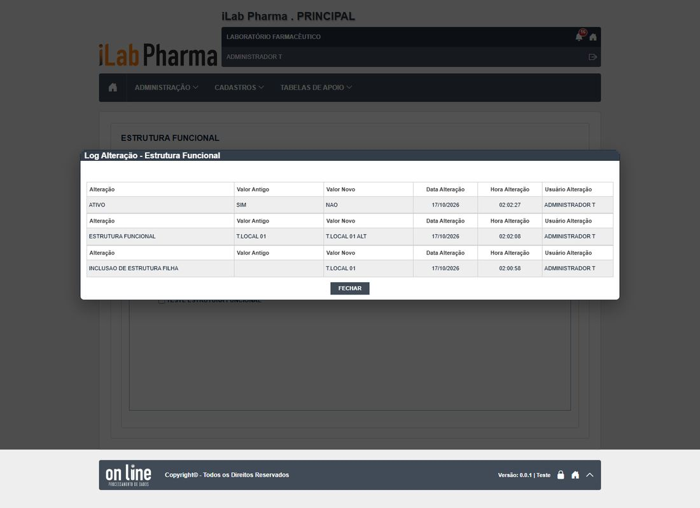
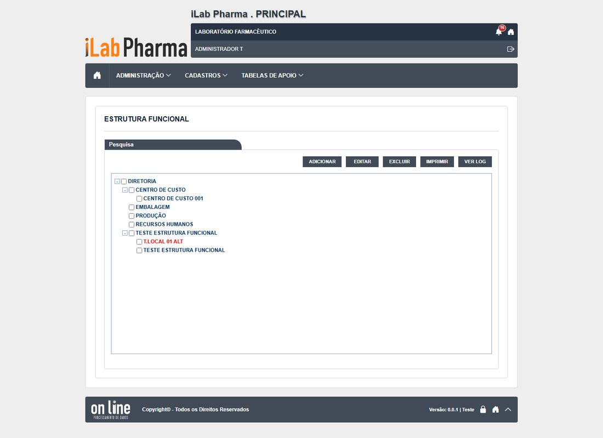
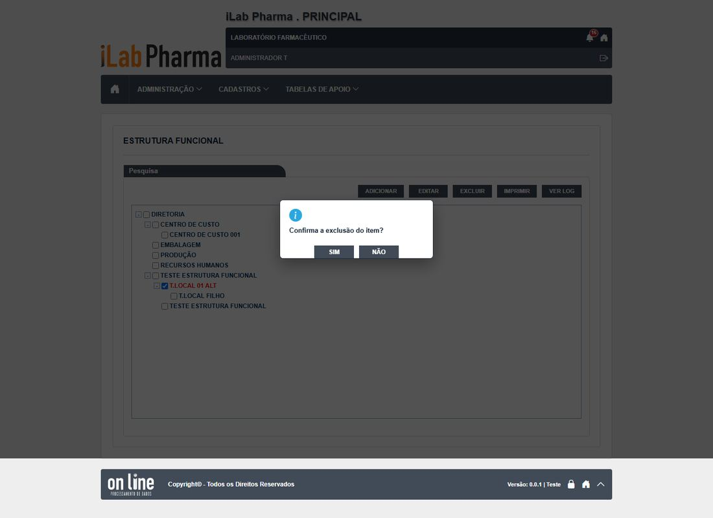
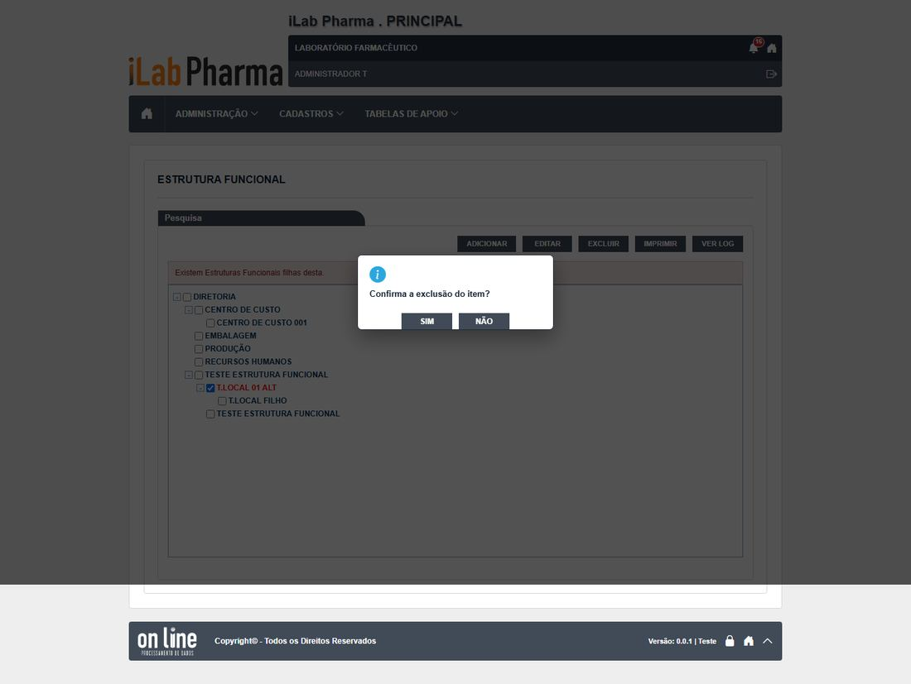

Roteiro para quem vai testar a tela Estrutura funcional (Locais) (menu Cadastros) na versão nova. Use o ambiente de teste da versão nova; o sistema entregue só entra se um resultado parecer estranho.
Antes de começar
- Usuário com a função Cadastros > Estrutura funcional (
t.admin). - Sigla com até 5 caracteres (
T.001). - Todo registro novo começa com
T.(se o ponto falhar, useT-e anote o campo). - Dados de teste ficam no ambiente: não apague o que não criou.
Passos
| # | O que fazer | O que deve aparecer | Caso do plano |
|---|---|---|---|
| 1 | Abrir Cadastros > Estrutura funcional e marcar "TESTE ESTRUTURA FUNCIONAL". | A árvore abre; os botões agem sobre o item marcado. | — |
| 2 | Clicar em ADICIONAR e salvar vazio. | Mensagens: "Preencha o Local", "Preencha o Responsável", "Preencha a sigla". Anote cada uma. | RG-PRI-040 |
| 3 | Incluir T.LOCAL 01 com sigla T.001. Incluir outro com a mesma sigla. |
O primeiro grava; o segundo é recusado por sigla repetida (a mensagem pode sumir em 1 s). | RG-PRI-040 |
| 4 | Digitar mais de 100 caracteres no nome e mais de 5 na sigla. | A tela corta. | RG-PRI-041 |
| 5 | Alterar o nome. Abrir VER LOG. | Anote se pede justificativa e o que o histórico mostra. | RG-PRI-042, 048 |
| 6 | Inativar o local e criar um filho sob ele. | O inativo continua na árvore e aceita filho (a corrigir). | RG-PRI-043 |
| 7 | Excluir o pai que tem filho. | Recusado: "Existem Estruturas Funcionais filhas desta." | RG-PRI-045 |
| 8 | Excluir o filho e depois o pai. | Pede só a confirmação, sem justificativa. Abra o VER LOG do excluído: 404. | RG-PRI-044 |
| 9 | Clicar em EXCEL e IMPRIMIR. | Arquivo .xlsx e PDF. | RG-PRI-047 |
Capturas de tela da versão nova
Imagens da rodada de testes de 17/10/2026, na ordem dos passos. Clique para ampliar.
Passo 2



Passo 3
Passo 5


Passo 6

Passo 7


Passo 8

Como registrar
Para cada passo anote: o que apareceu na tela (copie a mensagem), a classe (Igual, Regressão, Melhoria, Novo ou Bloqueado), o defeito (se houver) e o nome da captura. Se um caso ficou Bloqueado, diga o motivo (usuário, perfil ou dado que faltou).
Se algo parecer uma falha de permissão, confira primeiro a Conta usuário e o Perfil do usuário antes de concluir que a tela falhou.
Tabela de resultados
A coluna Resultado do caso em 17/10/2026 traz o que a tela mostrou, para o caso do plano que o passo cobre (passos do mesmo caso repetem o resultado). Refaça o passo e use a última coluna para o seu resultado: se for diferente, anote a classe (Igual, Regressão, Melhoria, Novo ou Bloqueado) e o defeito.
| Passo | Resultado do caso em 17/10/2026 | Classe | Defeito | Captura | Seu resultado |
|---|---|---|---|---|---|
| 1 | |||||
| 2 | Mensagens por campo; pede confirmação; sigla repetida recusada | Igual | N-003 | RG-PRI-040-local-passo-0-adicionar-sem-selecao, RG-PRI-040-local-passo-1-vazio |
|
| 3 | Mensagens por campo; pede confirmação; sigla repetida recusada | Igual | N-003 | RG-PRI-040-local-passo-0-adicionar-sem-selecao, RG-PRI-040-local-passo-1-vazio |
|
| 4 | Local corta em 100; sigla em 5 | Igual | — | — | |
| 5 | Alterar não pede justificativa / Inclusão, alteração e inativação, sem justificativa; textos sem acento | Igual | N-002 | RG-PRI-042-local-passo-1-edicao, RG-PRI-048-local-passo-1-historico |
|
| 6 | O inativo continua na árvore; aceitou criar filho sob local inativo | Igual | — | RG-PRI-043-local-passo-1-arvore |
|
| 7 | Com filhos: recusado. Local usado por usuário: não testável | Novo | — | RG-PRI-045-local-passo-1-dialogo, RG-PRI-045-local-passo-2-resultado |
|
| 8 | Sem justificativa; histórico do excluído some | Igual | DV-PRI-N-007 | RG-PRI-044-local-passo-1-apos-excluir |
|
| 9 | Baixa .xlsx (200) e gera PDF (200) | Igual | — | — |